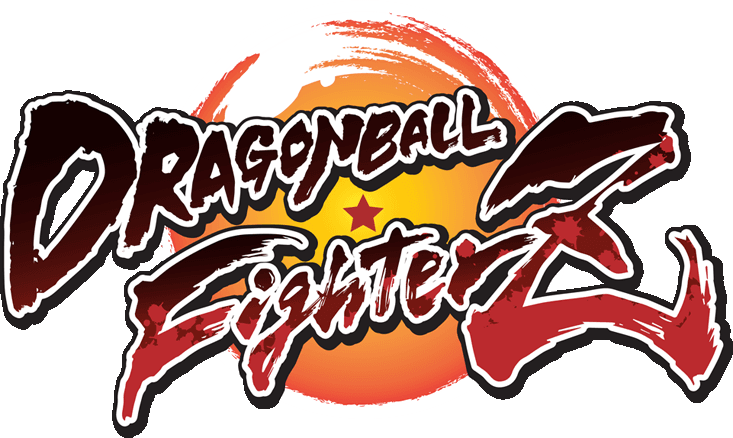
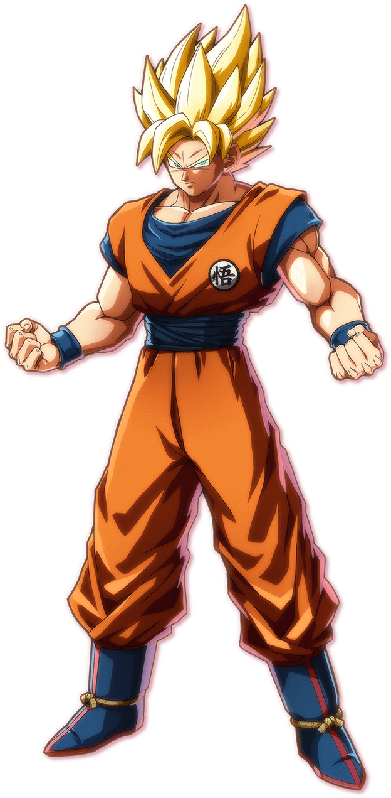
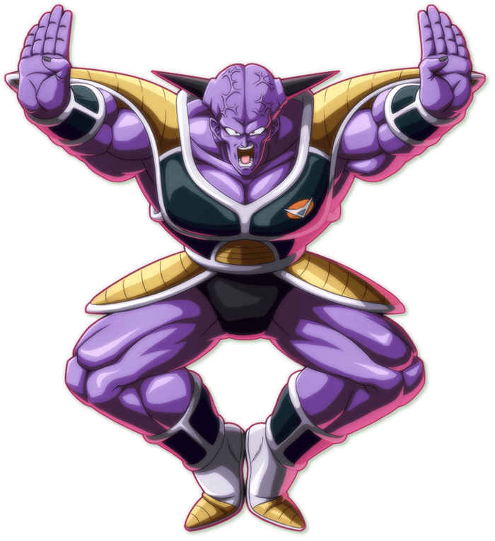
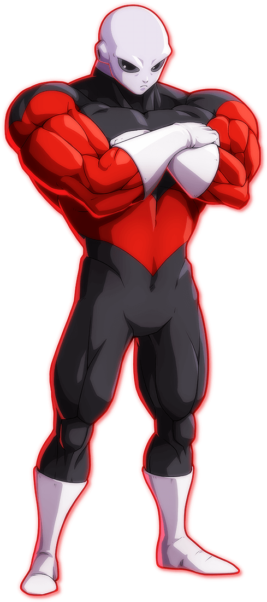

Dragon Ball FighterZ is a Fast 2D anime tag team fighter that is easy to pick up but hard to master. You can have 3 characters in a team that can be sent in to use assists. The game uses simple controles with most of the special moves being the same with just different levels of damage. The game uses Light, Medium, Heavy and Special as neutral moves which makes it easy to learn.


GOKU (SSJ) is the basic character of dbfz that poses great neutral attacks and great projectiles nothing special or complicated having the basic bnb combos that you can learn easily but this does not remove the fact that if mastered goku can pull of some high damage combos, a great character to pick up and play if its your first time.


Captain Ginyu is a summoner character that replaces his normal projectiles with summoning a member of the Ginyu force. He can have 2 goons out at once that all do special abilities like stunning the opponent or fiering a laser at them. One of Ginyues special abilities is to change his soul with the other fighter swapping character and health.


JIREN is a DLC fighter in the game that uses counters and grabbing replacing a standard heavy attack with a grab that cannot be blocked but can be easily reacted. His Neutral special moves are counters when hit jiren will take no damage instead attacking the opponent. His projectiles are fast and hit hard. A complicating but rewarding character if you can land those counters.